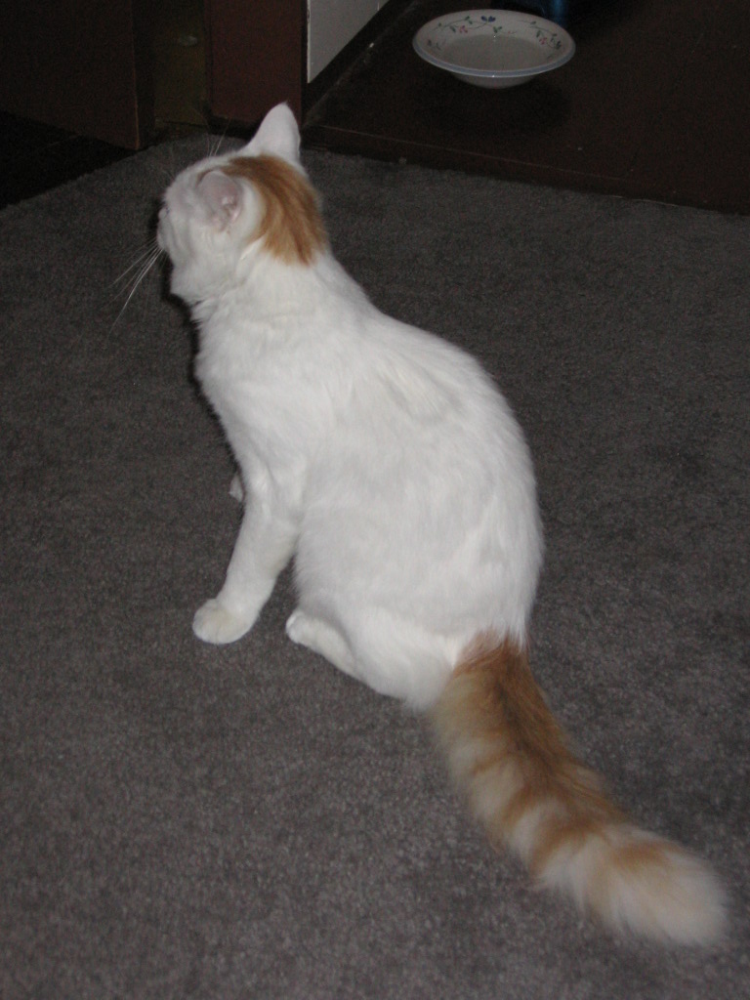

The Nighttime Habit Destroying Your Teeth
Clenching and grinding are easy to miss. Here's how to spot the signs, what it can cost you, and what to do about it.
Floss and Flora is where a Registered Dental Hygienist breaks down the research on oral health and how your mouth connects to the rest of your body, in plain language you can actually use.

I'm a Registered Dental Hygienist, and I spend my days seeing how small, everyday habits show up in people's mouths, often long before anyone notices a problem.
I started Floss and Flora to share what I wish every patient knew: why your gums, your teeth, and the tiny ecosystem living in your mouth matter for your whole body. Every video is built on published research, with sources linked so you can read them yourself.
Studies and sources cited in every description.
How oral health links to your heart, sleep, stress, and more.
Practical things you can do, plus when to see a professional.
Subscribe to Floss and Flora so you don't miss the next one.
Subscribe on YouTube